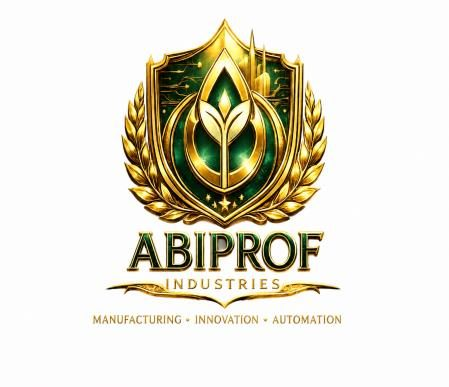
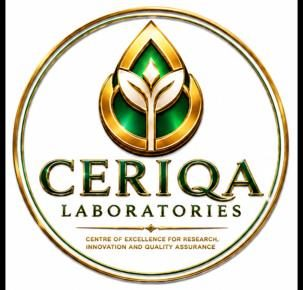
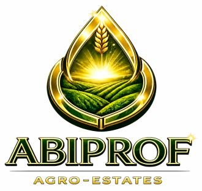
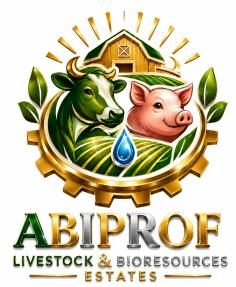
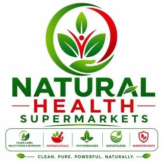

MÉMORANDUM EXÉCUTIF DE FINANCEMENT DE PROJET — SEPTEMBRE 2026
African Green Farmers (A.G.F) Limited
Plateforme agro-industrielle et bioéconomique circulaire, activée par le système ACIDS, dédiée à la fabrication de produits nutraceutiques, alimentaires et d'intrants biologiques certifiés GMP en Zambie — via la division industrielle ANINOVA INDUSTRIES.
USD 63,2 M
Investissement total du projet
USD 196,9 M
Bénéfice net cumulé sur 10 ans
15,78 %
Taux de rentabilité interne (TRI)
USD 30,65 M
Valeur actuelle nette (VAN)
Voir les projections financières Explorer les 11 produits phares
SECTIONS DE CE SITE — 23 au total (Fiche projet 0 à Section 22)
- 0Fiche projet
- 1Résumé exécutif
- 2Résumé exécutif du crédit
- 3Profil de la société
- 4Contexte & justification
- 5Énoncé de vision
- 6Énoncé de mission
- 7Justification stratégique
- 8Objectifs à 10 ans
- 9Besoin d'investissement
- 10Maturité du projet
- 11Portefeuille de produits
- 12Pipeline d'innovation
- 13Commercialisation & revenus
- 14Transparence & financement
- 15Stratégie de remboursement
- 16Risques & atténuation
- 17Capacité de remboursement
- 18Plan de sécurisation des flux
- 19Impact stratégique
- 20Projections financières
- 21Calendrier de mise en œuvre
- 22Note d'approbation du comité
0
SECTION 0
Fiche projet
| Titre du projet | Système intégré de transformation agro-industrielle des aliments & de fabrication d'engrais organiques |
|---|---|
| Site pilote de transformation agroalimentaire | AFOOPROC — Agrofood Processing And Organic Processing Centre |
| Installation certifiée GMP | ABIPROF (Agrofood & Bio-Inputs Processing Facility) INDUSTRIES |
| Entité promotrice | African Green Farmers (A.G.F) Limited |
| Date de constitution | 12 mars 2025 |
| TPIN | 2003675243 |
| Zone centrale de production | Plateforme industrielle de production organique activée par ACIDS, s'étendant sur plus de 2 000 hectares |
| Coopératives d'agriculteurs locaux fournisseurs sous contrat (projeté) | ….. |
| Licence d'investissement | ZDA/59004/10/2025 (Zambia Development Agency) |
| Incitations fiscales (5 ans) | Réf. ZDA/DG/DUTY, 22 janvier 2026 (Ministère des Finances) |
| Localisation | Zone de Keembe, le long de Mungule Road, Plot No. 20, village de Chibombo, chefferie de Liteta, district de Chibombo, Province Centrale, Zambie |
| Directeur général | Harimenshi Alexis |
| +260 777 844 844 | |
| Cellulaire | +260 764 346 468 |
| agfcompany2026@gmail.com | |
| Personne de contact | ….. |
| Plateforme | Système intégré de transformation agro-industrielle des aliments & de fabrication d'engrais organiques |
| Investissement total du projet | USD 63 209 692,00 |
|---|---|
| Type de prêt proposé | Prêt-projet concessionnel à long terme |
| Objectif du prêt | Extension de l'unité pilote AFOOPROC vers ABIPROF INDUSTRIES |
| Période de grâce proposée | 5 ans |
| Principal dispositif de sécurité | SBLC, DSRA |
| Durée de remboursement proposée | 25 ans |
| Taux d'actualisation proposé | 10,00 % |
| Résultat net Année 1 | USD -21 752 471,40 (phase de déploiement du capital) |
| Bénéfice net Année 2 | USD 12 713 372,31 |
| Bénéfice net Année 3 | USD 13 035 818,24 |
| Bénéfice net Année 4 | USD 14 637 734,08 |
| Bénéfice net Année 5 | USD 15 695 786,06 |
| Bénéfice net Année 6 | USD 20 647 306,06 |
| Bénéfice net Année 7 | USD 25 389 778,06 |
| Bénéfice net Année 8 | USD 31 018 268,06 |
| Bénéfice net Année 9 | USD 37 844 836,06 |
| Bénéfice net Année 10 | USD 47 682 468,06 |
| Bénéfice net total sur 10 ans | USD 196 912 895,60 |
| VAN (Valeur actuelle nette) | USD 30 647 214,15 |
| TRI (Taux de rentabilité interne) | 15,78 % |
| IP (Indice de profitabilité) | 1,48 |
A.G.F LIMITED — Unités stratégiques de gestion (SBUs) : ABIPROF Agro-Estates, ABIPROF Industries, CERIQA Laboratories, ABIPROF Livestock & Bioresources, et le réseau Natural Health Food Supermarkets forment un écosystème intégré : origines durables, innovation, science & qualité, bio-ressources circulaires, accès au marché.




